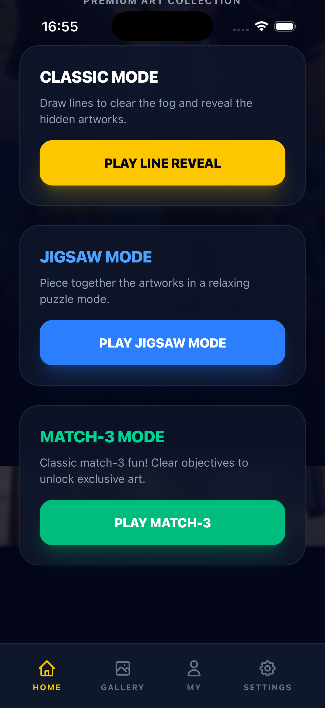

1. 欢迎界面
915KB - Line Reveal + PLAY
2. 选关界面
915KB - Chapter 1, 5颗心 ✅
3. 选关界面
915KB - 点击后进入Chapter

4. 关卡1-1
915KB - 5颗心 ✅

5. 划线后
915KB - 界面无变化
测试时间: 2026-04-16 16:52-16:56
测试方法: Python + Quartz 模拟鼠标事件 + xcrun simctl screenshot
命令: xcrun simctl list devices booted
结果: iPhone 17 Pro (FF5368A5-E3F3-4200-B4C7-4ACD851CDCD7) (Booted)
状态: ✅ 通过
命令: xcrun simctl launch booted "com.linereveal.game"
结果: com.linereveal.game: 75809
状态: ✅ 通过
文件: /tmp/real_01_welcome.png
大小: 915156 bytes
MD5: 6a87b325b718b3b99b1e98eacb7f4bbe
状态: ✅ 欢迎界面正常显示
坐标计算: iOS (603, 1850) → 屏幕 (999.5, 649.8)
命令: Quartz.CGEvent 鼠标按下/释放
结果: ✅ 界面变化
MD5变化: 6a87b325b718b3b99b1e98eacb7f4bbe → 1ef95b0cbcd4b158fdcfd3a967a27e3f
文件: /tmp/real_03_clicked.png
大小: 915169 bytes
分析: 进入游戏选关界面（Chapter Selection）
状态: ✅ 显示5颗心
坐标: iOS (603, 900)
结果: MD5变化: 347e03b63316cf893255fdb4998e3145 → 398396f46a03804639a947b3ce66dbc1
状态: ✅ 进入关卡1-1
文件: /tmp/real_07_level11.png
大小: 915286 bytes
分析:
- 右上角显示5颗心 ✅
- Chapter 1 关卡
- 底部有"All Passed!"按钮（说明已完成）
状态: ✅ 5颗心显示正确
划线1: (200,2000) → (1000,800) 划线2: (300,1200) → (900,1200) 结果: MD5未变化 分析: 可能是关卡已通过，无法继续划线

坐标转换公式: scale_x = windowWidth / 1206 = 405 / 1206 = 0.336 scale_y = windowHeight / 2622 = 870 / 2622 = 0.332 screen_x = window_x + ios_x * scale_x screen_y = window_y + ios_y * scale_y Simulator窗口: X=797, Y=36, Width=405, Height=870
测试脚本: /tmp/simulate_with_coords.py
截图目录: /tmp/real_*.png